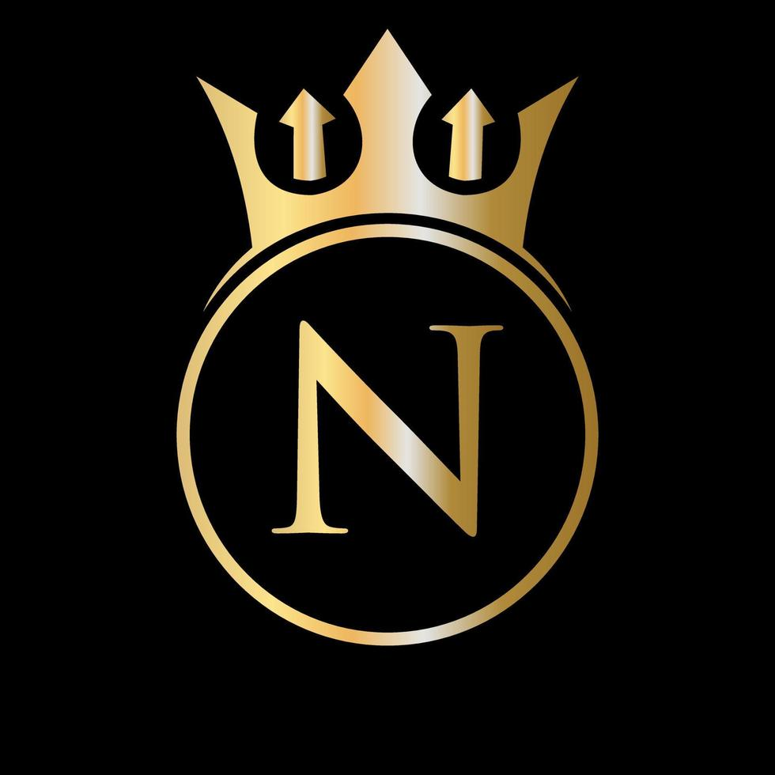

Hola, soy xvi y soy el fundador de esta comunidad, os voy a explicar que es y como funciona. Antes de comenzar a explicar, si os fijais en mi foto de perfil, vereis un punto verde, eso significa que estoy en línea y disponible para interactuar con vosotros. En cambio en el apartado de Streamers y los foros, si os apoyais en el puntito del color que sea, podreis ver el estado de los usuarios.
Nexus es una comunidad creada para reunir a streamers, creadores de contenido, aficionados a los videojuegos y personas interesadas en el mundo del entretenimiento digital. Nuestra plataforma nace con la idea de ofrecer un espacio donde todos puedan compartir su pasión por la creación de contenido, descubrir nuevos talentos, intercambiar conocimientos y establecer relaciones con otros usuarios que tengan intereses similares. Nuestro principal objetivo es fomentar la participación, la colaboración y el crecimiento de los creadores de contenido, independientemente de su experiencia o del número de seguidores que tengan. Creemos que todos merecen una oportunidad para darse a conocer, desarrollar sus habilidades y encontrar personas con las que compartir sus ideas y proyectos. Por eso, queremos construir una comunidad abierta, activa y acogedora, donde los usuarios puedan aprender unos de otros y apoyarse mutuamente. Dentro de Nexus encontrarás diferentes secciones diseñadas para facilitar la interacción y mantenerte al día de lo que sucede en la comunidad. En el apartado En directo podrás descubrir qué creadores están retransmitiendo en ese momento. En la sección Creadores podrás conocer nuevos streamers a través de sus perfiles, donde aparecerán sus avatares, el número de seguidores, la plataforma en la que publican contenido y su temática principal. De esta manera, será más fácil encontrar creadores que compartan tus gustos e intereses. También contaremos con una sección de Clips, dedicada a destacar los mejores momentos, las jugadas más espectaculares, las situaciones más divertidas y los acontecimientos más interesantes de la semana. Así, los usuarios podrán descubrir contenido entretenido incluso cuando no hayan podido seguir los directos en tiempo real. Por otro lado, el apartado Horarios permitirá consultar las fechas y horas de las próximas retransmisiones para que nadie se pierda los directos de sus creadores favoritos. Además de descubrir contenido, queremos que esta plataforma sirva como punto de encuentro para compartir experiencias, aprender nuevas técnicas, intercambiar consejos y encontrar posibles compañeros para futuros proyectos. Tanto si estás empezando en el mundo del streaming como si ya cuentas con una comunidad de seguidores, aquí podrás encontrar inspiración, nuevas oportunidades y personas dispuestas a colaborar contigo. Otro de nuestros propósitos es promover un ambiente respetuoso, positivo y participativo. Queremos que todos los miembros se sientan cómodos compartiendo sus creaciones, expresando sus opiniones y participando en las diferentes actividades. Para nosotros, una comunidad no se construye únicamente con seguidores o visualizaciones, sino también con la confianza, el respeto y el apoyo entre sus integrantes. En definitiva, Nexus_Streamers & Creators quiere convertirse en mucho más que una página para ver directos. Queremos crear un espacio en el que los creadores puedan crecer, los espectadores puedan descubrir contenido interesante y todos puedan formar parte de una comunidad unida por una misma pasión: el mundo del streaming y la creación de contenido digital. ¡Explora, participa, comparte tus mejores momentos y forma parte de Nexus! El próximo gran creador que descubras podría estar aquí.